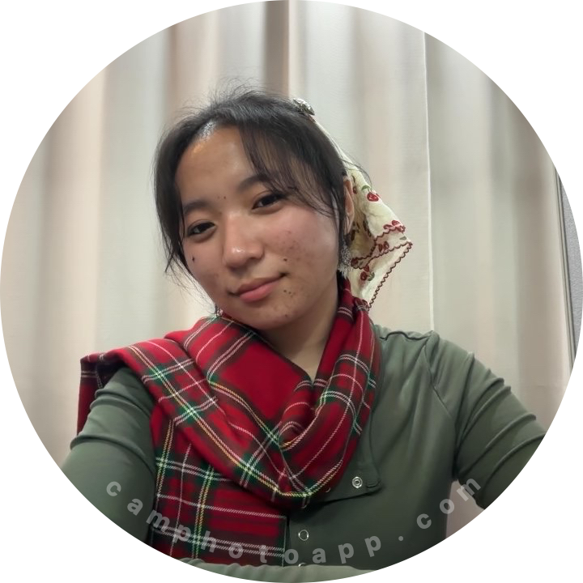

Book Search
Search titles and authors, display book covers and handle loading and failure states.
Open Book Search →WEB PROGRAMMING · RAI SWONU · 202637725

I’m Rai Swonu, a Gachon University student learning HTML, CSS and JavaScript through practical web projects.
View my coursework on GitHubHTML CSS JavaScript API requests Accessible forms
Search titles and authors, display book covers and handle loading and failure states.
Open Book Search →My existing weather exercise with city selection and a seven-day forecast.
Open weather →My existing form exercise with associated labels and validation.
Open registration →Showing 3 projects.
Keep improving responsive layouts, accessible interactions and clear error feedback.